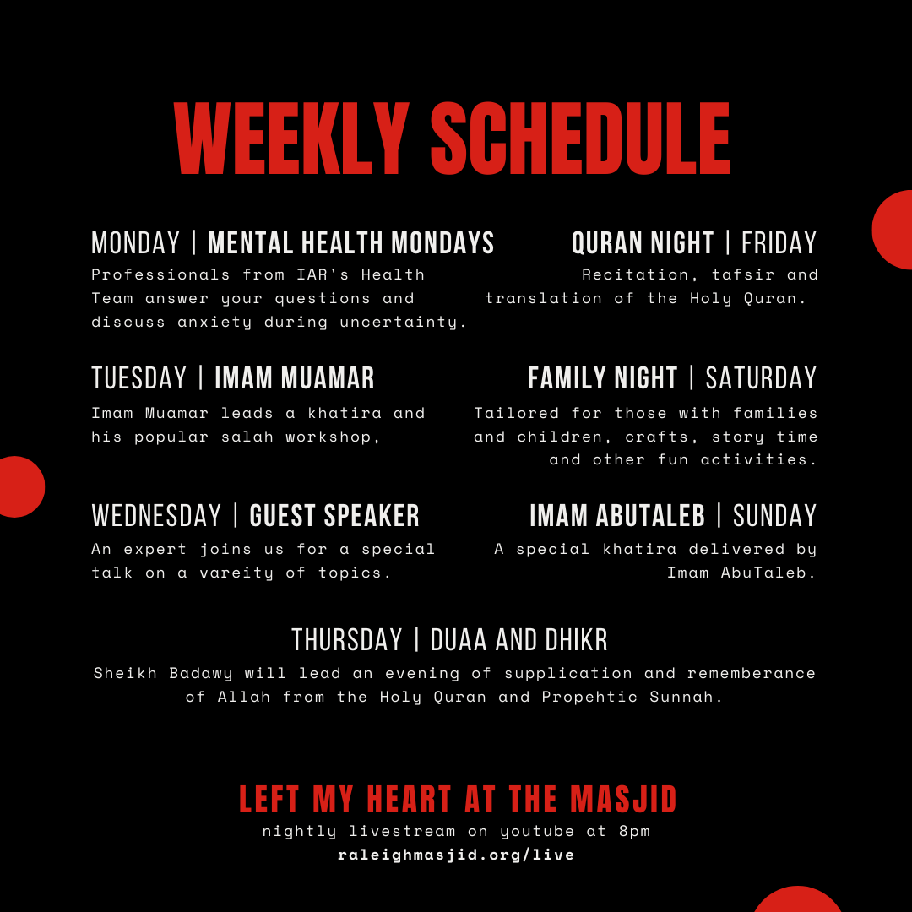

Program information
- Frequency: Daily
- Time: 8pm
- Watch live: on YouTube
- Watch previous episodes: on YouTube
Left My Heart at the Masjid
Imam AbuTaleb is hosting a brand new daily webcast starting at 8pm every night. "Left My Heart at the Masjid" features brief khatiras and Islamic Reminders as well as information on the IAR's closure due to the COVID-19 pandemic. Includes Mental Health Monday with guidance on depression and anxiety, family story time, special guests, and a Quran recitation. Behind the Minbar is our new brand for a series of more informal virtual programming such as a forthcoming podcast.